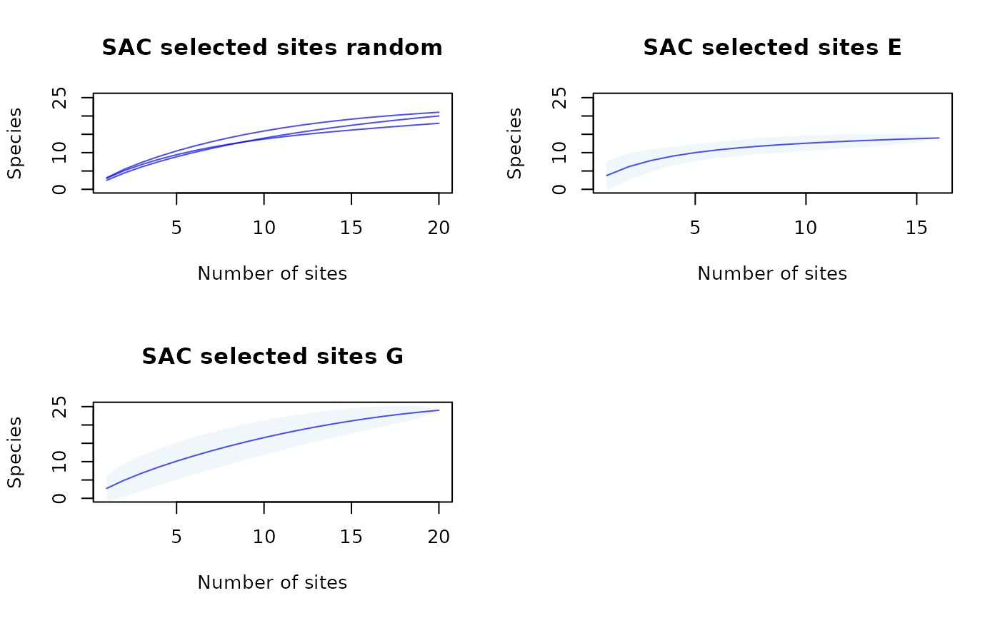

Creates species accumulation curve plots (one or multiple
panels) from information contained in lists obtained with the function
selected_sites_SAC.
Usage
plot_SAC(SAC_selected_sites, col_mean = "blue", col_CI = "lightblue",
alpha_mean = 0.7, alpha_CI = 0.2, xlab = "Number of sites",
ylab = "Species", line_for_multiple = TRUE, main = NULL, ...)Arguments
- SAC_selected_sites
nested list of "
specaccum" objects obtained with functionselected_sites_SAC.- col_mean
(character) color for mean value of curve. Default = "blue".
- col_CI
(character) color for confidence interval region for the curve. Default = "lightblue".
- alpha_mean
(numeric) alpha level for line representing the mean, values from 0 to 1. Default = 0.7. Values close to 0 increase transparency.
- alpha_CI
(numeric) alpha level for the region representing the confidence interval. Default = 0.2.
- xlab
(character) label for x-axis of plot. Default = "Number of sites".
- ylab
(character) label for y-axis of plot. Default = "Species".
- line_for_multiple
(logical) whether to plot SACs only as lines when multiple objects are in one or more of the internal lists in
SAC_selected_sites. Default = TRUE.- main
(character) title or titles for plots. The default, NULL, adds titles according to names of elements in
SAC_selected_sites.- ...
other arguments to be passed to plot method for objects of class "
specaccum".
Value
A plot of "specaccum" objects. Multiple panels will be plotted
if SAC_selected_sites list contains more than one element.
Examples
# Data
b_pam <- read_PAM(system.file("extdata/b_pam.rds",
package = "biosurvey"))
m_selection <- read_master(system.file("extdata/m_selection.rds",
package = "biosurvey"))
# Subsetting base PAM according to selections
sub_pam_all <- subset_PAM(b_pam, m_selection, selection_type = "all")
SACs <- selected_sites_SAC(PAM_subset = sub_pam_all, selection_type = "all")
# Plotting
plot_SAC(SACs)
